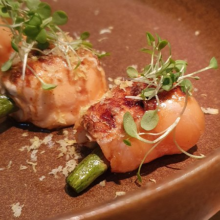
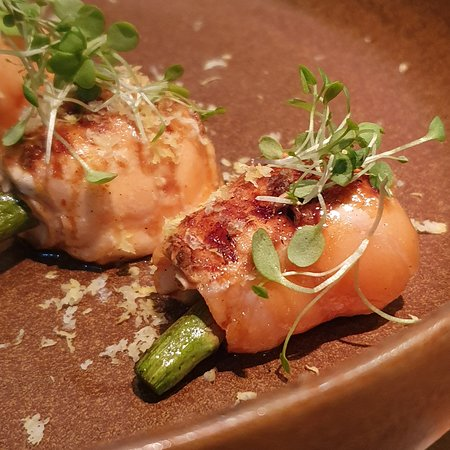
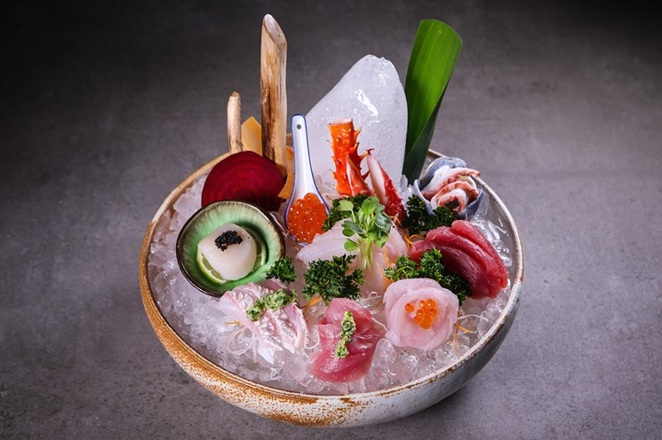
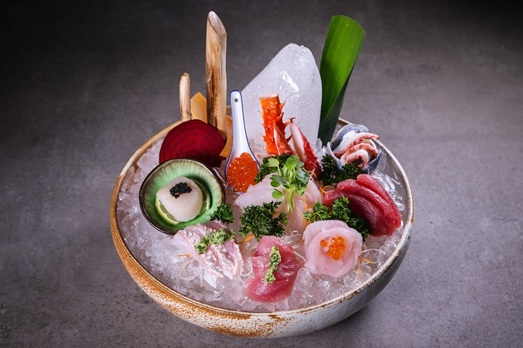
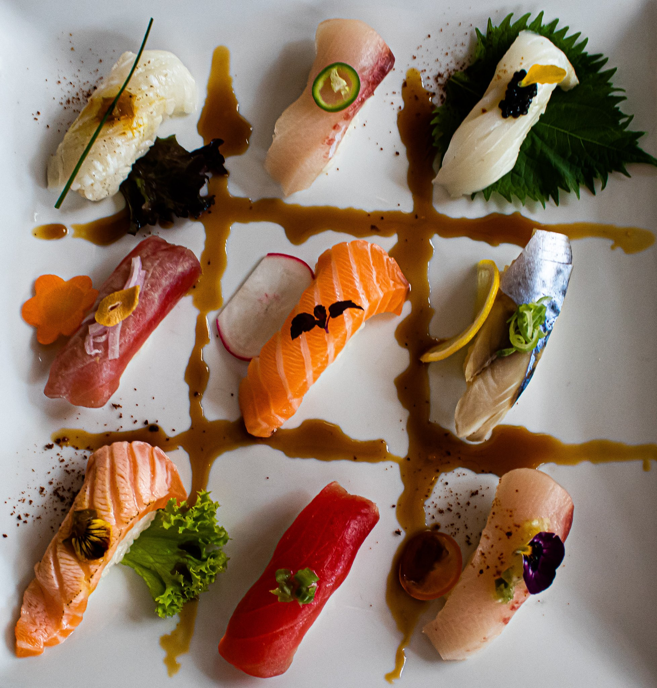
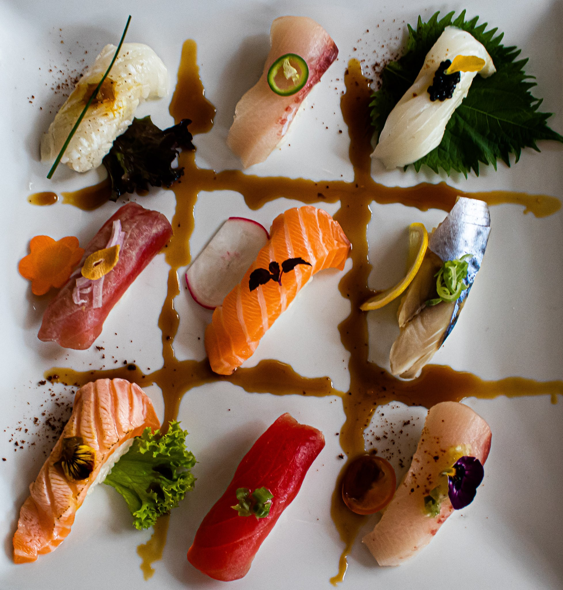
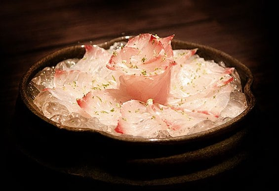
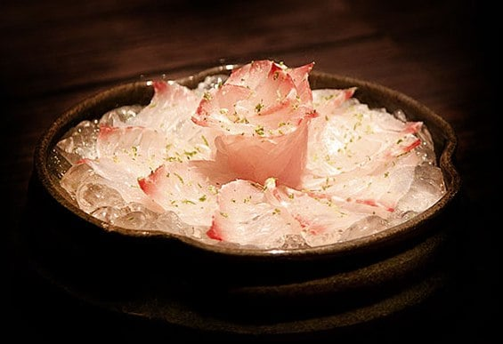

Sushi Restaurants:
Huto Izakaya
 

The cuisine and ambiance will never disappoint at One MICHELIN Star restaurant. You will find the highest quality japanese food at this small restaurant (which is run by the owner himself).
Chef's advice:
Choose one of the three 'omakase' menus (meaning: leave it up to us). Other notable plates are flor de ovos, and mango with lychee ice cream.
Kosushi
 

According to the Michelin Guide "the name [of the restaurant] comes from Japanese philosophy, as the word 'ko' means 'turtle' [referencing] longevity and the number 1." Kosushi is also a MICHELIN star restaurant, but beyond that, it is known for serving high quality fish, with a beautiful presentation, and nevertheless, an impeccable taste.
Plate recommendations:
Tartar misto, truffled salmon carpaccio
By Koji
 

Located inside the São Paulo Futebol Clube soccer stadium, Koji is known for its views of the field (yes you can eat there on game day - but you have to book in advance) as well as its great variety of high quality fish.
Plate recommendations:
Temake de Ikurá, Niguiri de Bluefin, Sashimi de salmão e Bluefin
Ohka
 

Another MICHCELIN restaurant, Ohka differentiates itself with its colorful paper images of geishas and other traditional Japanese images along its walls, creating a contemporary and elegant look. Again, the high quality and great service is what continually attracts customers.
Plate recommendations:
Octopus carpaccio, Baterá de King Crab, Sushi Pantanal